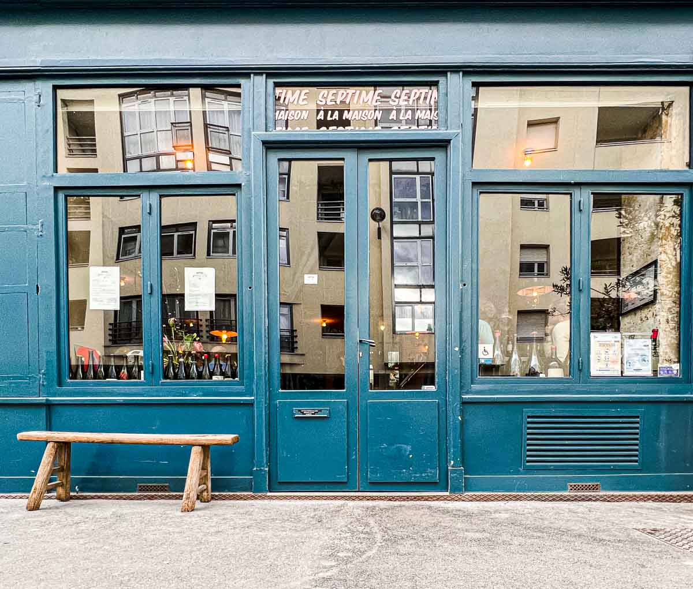
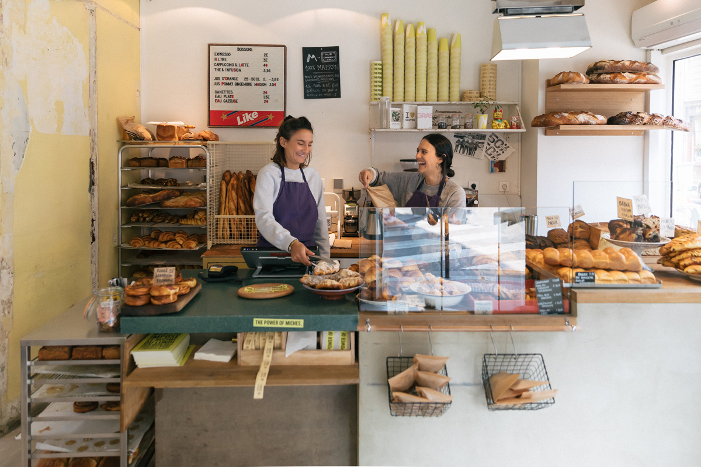

Mocht je je in Montmarte bevinden, bezoek dan zeker dit restaurant. Pink Mamma is een italiaans restaurant met goed eten voor een redelijjke prijs, daarnaast is het geweldig ingericht en zul je je ogen uitkijken. Het pand heeft vier verdiepingen en zit weken van te voren al volgeboekt, dus wees er snel bij!
Septime is een echt Frans restaurant met een michellen ster. Parijzenaren gaan hier graag heen als ze wat te vieren hebben. De eigenaar was begonnen als graffitie artiest maar ging naar de koksschool om toch wat bij te kunnen verdienen. Uiteindlijk is dit prachtige restaurant eruit voort gekomen! Je moet wel van te voren reserveren en het is wat duurder. Reserveer op tijd want de Parijzenaren komen hier ook maar al te graag!
Mamiche is een echte Franse bakkerij. Je kan hier de pain au chocolat en de eclairs absoluut niet overslaan. Zelf de Parijzenaren staan hier al in de rij! Wees er dus snel bij!